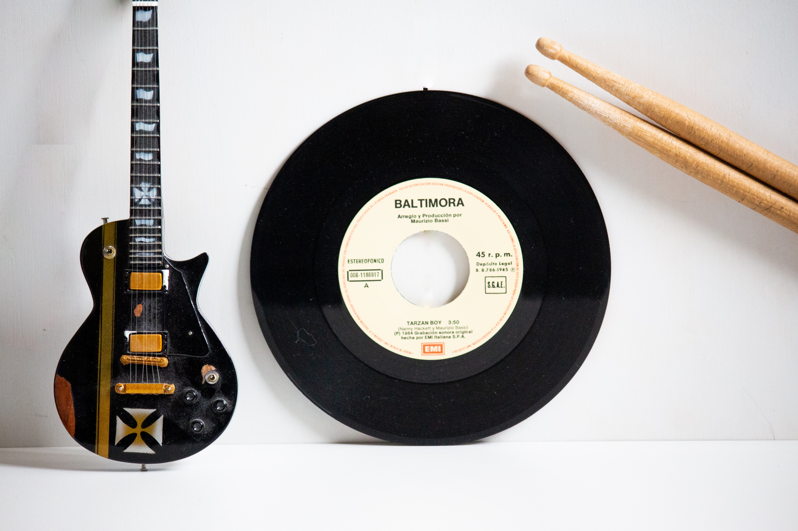

Pop Music
Pop music is a genre of popular music that originated in its modern form during the mid-1950s in the United States and the United Kingdom. The terms popular music and pop music are often used interchangeably, although the former describes all music that is popular and includes many disparate styles.
Rock Music

Rock music is a broad genre of popular music that originated as "rock and roll" in the United States in the late 1940s and early 1950s, developing into a range of different styles in the mid-1960s and later, particularly in the United States and United Kingdom.
Classical Music
Classical music generally refers to the art music of the Western world, considered to be distinct from Western folk music or popular music traditions. It is sometimes distinguished as Western classical music, as the term "classical music" also applies to non-Western art music.
Hip Hop Music

Hip hop music or hip-hop music, also known as rap music and formerly known as disco rap, is a genre of popular music that originated in New York City in the 1970s. It consists of stylized rhythmic music that commonly accompanies rapping, a rhythmic and rhyming speech that is chanted.
Jazz

Jazz is a music genre that originated in the African-American communities of New Orleans, Louisiana, in the late 19th and early 20th centuries, with its roots in blues and ragtime. Since the 1920s Jazz Age, it has been recognized as a major form of musical expression in traditional and popular music.
Country Music
Country is a music genre originating in the Southern and Southwestern United States. First produced in the 1920s, country primarily focuses on working class Americans and blue-collar American life.